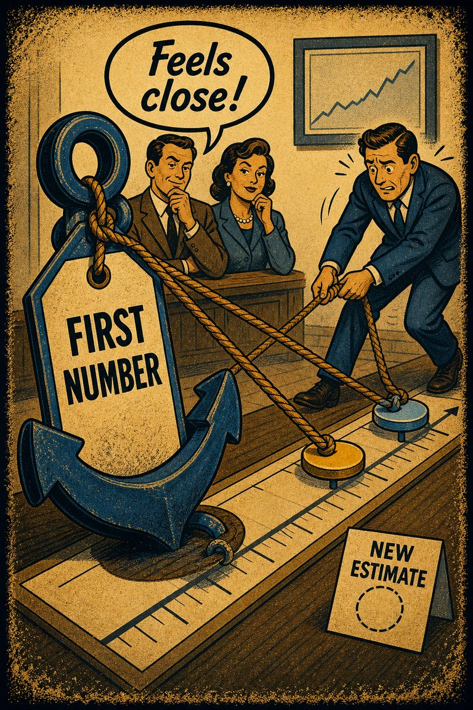
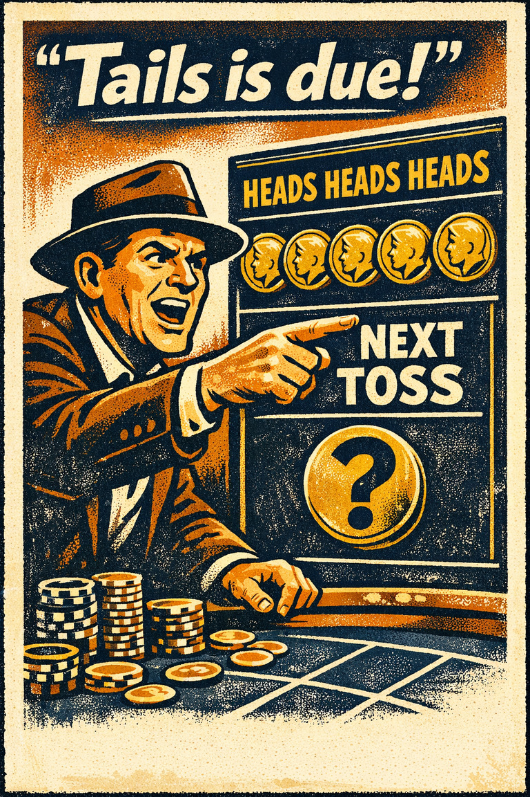
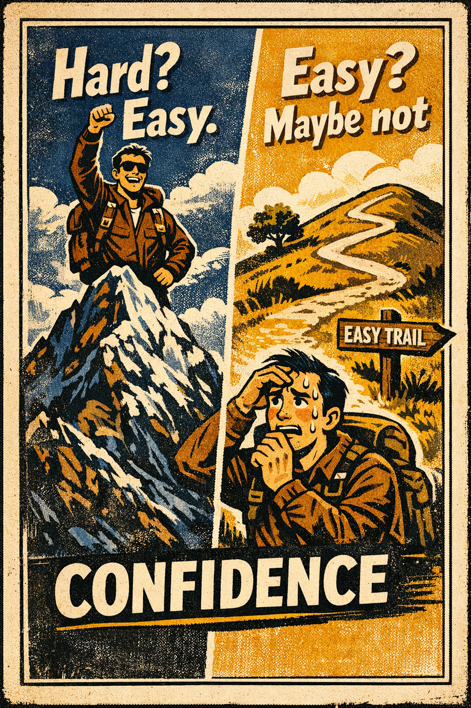

Common in probabilistic judgment
79
Especially common in medicine, hiring, forecasting, and media interpretation.
Rare
Frequent

Cognitive Biases
A practical cognitive-bias site with clear definitions, learning paths, assessments, self-audits, and debiasing tools.
Cognitive Bias
The tendency to underweight general prevalence information when vivid case-specific details are available.
What it distorts
It makes rare outcomes seem too plausible and ordinary outcomes seem too negligible.
Typical trigger
Diagnostic reasoning, legal reasoning, medical testing, and forecast updates with vivid narratives.
First countermove
Write down the outside-view base rate before discussing the specific case details.
Best use
Structured process
What background rate belongs next to this vivid case before I say how likely it is?
Concrete stories feel richer than abstract frequencies, so the mind overuses individuating detail and underuses prior probabilities.
These are classroom-facing editorial estimates for comparing how the bias behaves in use. They are teaching aids, not measured statistics.
Common in probabilistic judgment
79
Especially common in medicine, hiring, forecasting, and media interpretation.
Easy to spot from outside
41
Many people do not notice the missing rate until it is explicitly supplied.
Easy to innocently commit
81
A rich case description feels more useful than a thin-looking percentage.
Teaching difficulty
57
Usually requires some probability literacy to become durable.
This comparison makes the hidden pull easier to see before the technical label has to do all the work.
Biased move
This is like diagnosing the whole lake from one fish because the fish looks especially distinctive.
Clearer comparison
The individual case can matter, but it has to be judged against the population it came from or the probability story will drift.
Do not use this label whenever people discuss a concrete case. Case-specific evidence can matter a great deal. The error is failing to weigh that evidence against the background frequency it is supposed to update.
Use this label when a vivid profile, anecdote, or test result gets interpreted without the relevant prevalence, reference class, or prior probability beside it.
Use the quick check, caveat, and nearby confusions together. The fastest diagnosis is often the noisiest one.
Each example changes the surface context while keeping the same hidden distortion in place.
A parent reads a symptom list online and starts reasoning from the vivid description of a rare disease rather than from how common ordinary explanations are.
A company sees one charismatic founder story and treats a risky strategy as normal while ignoring how few similar firms survive.
A crime report with dramatic specifics displaces the broader rate information that would make the event look less representative.
The detailed story feels smarter than the abstract percentage, so the story wins even when the rate is the real anchor.
Teaching note: This is one of the best pages for showing why numeracy is not enough; people can know the concept and still let the vivid story take over.
The strongest debiasing moves change the process, not just the label.
Write the prior odds down before discussing the particulars of the present case.
Start case reviews with the base rate slide, not the vivid anecdote slide.
Present diagnostic tools, hiring rubrics, and forecasts with reference-class benchmarks built in.
Practice And Repair
The core temptation is to let the case in front of you swallow the population behind it. Once that happens, plausibility starts replacing probability.
A specific profile, clue, or test result feels highly diagnostic before the broader prevalence picture is consulted.
The case description feels rich, while the base rate feels abstract, so the mind starts treating the richer source as the more serious one.
Likelihood judgments become too extreme because the background frequency never gets its rightful vote.
Name the reference class first, write the base rate beside the case evidence, and only then ask how much the case should move the estimate.
What is the prior probability here before this specific clue gets to revise it?
Spot It
Slow It
Reframe It
These distinction guides slow down the most common nearby-label confusions before the diagnosis hardens.
Survivorship bias samples only visible winners; base-rate neglect ignores the background frequency needed to interpret a case.
Quick rule: Ask whether the missing information is failed cases from the sample or background rates for the whole inference.
These are nearby labels that can share the same outer appearance while differing in what actually drives the distortion. Use the overlap, the distinction, and the diagnostic question together before settling the call.
Why compare it: Availability makes vivid cases easy to retrieve; base-rate neglect is the specific failure to let the prior odds restrain those vivid cases.
Why compare it: Survivorship bias corrupts the sample of cases you see; base-rate neglect ignores the broader frequency even when it is available.
Why compare it: Anchoring pulls estimates toward the first number offered; base-rate neglect bypasses the correct rate information in favor of individuating detail.
These are useful when the label seems roughly right but the process change still feels underspecified.
What is the outside-view prevalence before I personalize the case?
Am I mistaking detail for diagnostic value?
How different would my judgment be if I saw only the rate table first?
These sourced cases do not prove what was in someone's head with perfect certainty. They are teaching cases for showing where the bias pressure becomes visible in practice.
The engineer-lawyer description problem
Participants often ignored the known proportion of engineers and lawyers when a personality sketch sounded engineer-like.
Why it fits: The vivid description outran the population it was supposed to update.
Classic judgment task
Medical false positives and screening confusion
People often treat a positive test as if it meant near-certainty without checking prevalence and false-positive rates.
Why it fits: The case-specific signal gets interpreted without its probabilistic backdrop.
Modern examples
These linked tools turn the page into practice instead of leaving it at the level of definition.
2 related paths place this bias beside the distortions it most often travels with in practice.
Direct path
Use this path when you want the minimum set of pages that gives the rest of the site immediate traction.
Direct path
Use this path when you suspect that the apparent evidential picture is itself distorted.
These audits combine direct and nearby checks so you can test the label itself and the broader judgment pattern around it.
Direct audit
What would the outside view say before the inside story takes over?
Same audit family · Public claims and repetition
Is this memorable because it is representative, or because it is dramatic and easy to circulate?
These workshop packets mix direct coverage with nearby classroom material that makes the same distortion easier to teach.
Direct workshop
A 45-minute lesson for separating vivid stories, repeated claims, and missing denominators before a news item becomes belief.
Nearby workshop
Product Choice-Architecture Audit
A product and UX kit for testing whether defaults, decoys, metrics, and automation are helping users choose or quietly manufacturing preference.
These scenarios mix direct and nearby cases so you can practice the label itself and the broader judgment pattern around it.
Direct scenario
The vivid customer profile
A hiring panel hears a candidate described as reflective, bookish, and methodical and starts treating that profile as strong evidence that the person is more likely to be a data a…
Same scenario family · Public claims and repetition
Learning only from the winners on stage
A founder draws strategic lessons from ten celebrated startup stories without asking how many similar startups followed the same playbook and disappeared before anyone invited the…
This bias is also featured on Slugfester, a companion site with its own reference format and teaching angle.
This companion entry adds another teaching lens on what happens when vivid specifics crowd out the broader statistical backdrop.
These links widen the frame around the bias without interrupting the core lesson on this page.
An article on why identifiable cases, vivid prototypes, and human-scale stories can overpower larger but more abstract evidence and need deliberate rebalancing.
CogBias theory
A theory essay on why memorable winners create seductive but incomplete lessons when the failures disappear from view.
CogBias theory
These neighbors were selected from shared categories, shared patterns, and explicit editorial links where available.
The tendency to learn from the visible winners while overlooking the invisible failures that dropped out of view.

The tendency to judge frequency, risk, or importance by how easily examples come to mind.

The tendency for the first salient number, frame, or option to pull later estimates toward itself even when it is arbitrary or weakly relevant.

The tendency for low skill or shallow understanding to produce overestimation of one's own competence, while higher-skill people may underestimate how unusual their competence really is.

The tendency to think that future probabilities are altered by past events, when in reality they are unchanged.

The tendency to overestimate one's ability to accomplish hard tasks, and underestimate one's ability to accomplish easy tasks.